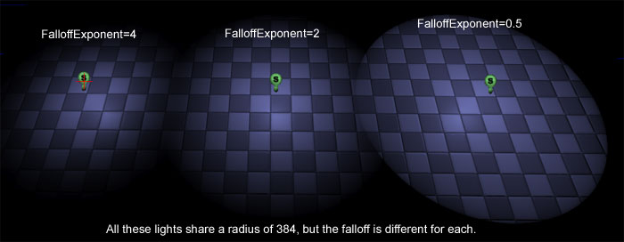
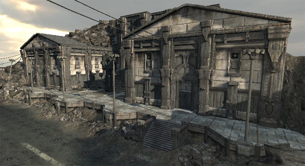
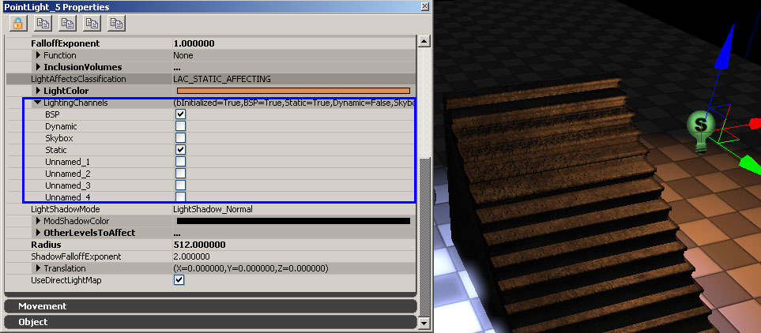
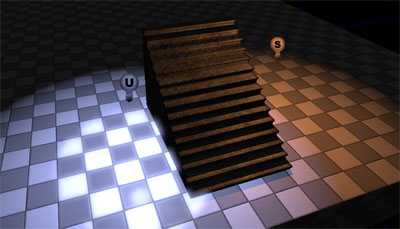
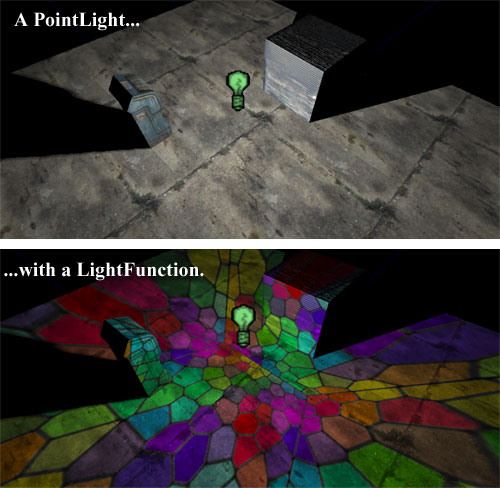
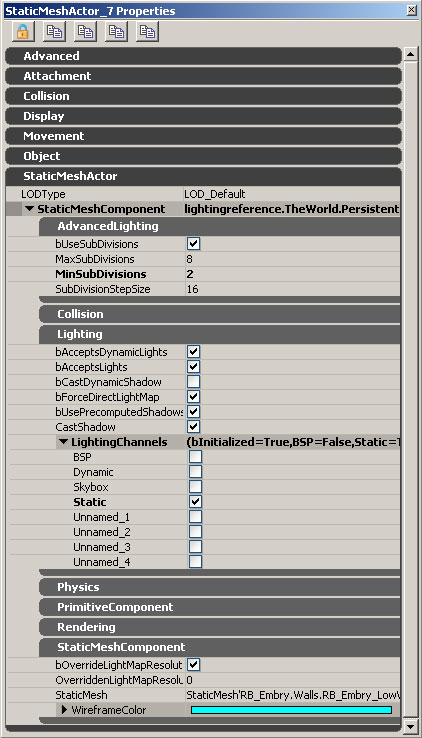

UDN
Search public documentation:
LightingReferenceKR
English Translation
日本語訳
中国翻译
Interested in the Unreal Engine?
Visit the Unreal Technology site.
Looking for jobs and company info?
Check out the Epic games site.
Questions about support via UDN?
Contact the UDN Staff
日本語訳
中国翻译
Interested in the Unreal Engine?
Visit the Unreal Technology site.
Looking for jobs and company info?
Check out the Epic games site.
Questions about support via UDN?
Contact the UDN Staff
라이팅 참고서
문서 변경내역: JamesGolding 작성, Andrew Scheidecker?, Ryan Brucks 업데이트. 홍성진 번역.
개요
레거시 옵션
라이트 종류 및 옵션 개요
글로벌 라이트 프로퍼티
여기서는 가장 일반적인 라이트 프로퍼티에 대해 간략히 살펴보겠습니다. 포인트 라이트는 가장 일반적으로 사용되는 라이트입니다. 모든 라이트 유형에 적용되지 않는 옵션의 경우에는 미리 공지해 드리겠습니다. bCastCompositeShadow: (컴포짓 섀도우 드리우기) 이 옵션은 라이트 인바이언먼트 에 영향을 끼칩니다.
bEnabled: (켜기) 라이트를 끄고 켤 수 있습니다. 스태틱 라이트는 게임에서 토글할 수 없으나, 라이트를 편집하면서 씬에 어떤 영향을 끼치는 지 빠르게 확인해 보고 싶을 때 토글해 보기에 이 플랙만한 것이 없습니다.
bForceDynamicLight: (다이내믹 라이트 강제) 이 옵션이 설정된 라이트는 강제로 스텐실 그림자를 드리우는 다이내믹 라이트가 되도록 하여, 미리계산 (라이트맵이나 섀도우맵) 대상에서 제외시킵니다. 스카이 라이트에는 영향을 끼치지 않습니다. 스텐실 그림자에 대한 상세 정보는 섀도잉 참고서 페이지를 살펴 보시기 바랍니다.
bOnlyAffectSameAndSpecifiedLevels: (같거나 지정된 레벨에만 영향) 이 옵션이 설정된 라이트는 같은 스트리밍 레벨에 있는 액터에만 영향을 끼치게 됩니다. 가끔 라이트가 레벨별로 영향을 끼치게 하고플 때 좋습니다. 영향을 끼치게 하고픈 다른 레벨은 OtherLevelsToAffect 배열에 추가시키면 됩니다.
Brightness: (밝기) 단순히 라이트의 밝기를 조절합니다. 밝기에는 상한선이 없으나, 라이트맵 라이트에 대해서는 16 이하의 밝기를 추천합니다. 밝기가 너무 밝으면 라이트맵의 범위가 희생되기 때문입니다.
bUseVolumes: (볼륨 사용) 라이트의 영향력을 월드에 놓은 볼륨 내로 제한시킬 수 있습니다. 라이트 볼륨에 대한 상세 설명은 아래 부분을 참고하시기 바랍니다.
CastDynamicShadows: (다이내믹 그림자 드리우기) 라이트가 다이내믹 액터에 영향을 끼치는 경우, 이 플랙을 통해 해당 라이트가 다이내믹 섀도우를 드리울지 여부를 결정할 수 있습니다. 퍼포먼스 상으로는 항상 거짓으로 설정하는 것이 좋습니다. 스카이 라이트에는 영향을 끼치지 않습니다.
CastShadows: (그림자 드리우기) 거짓으로 설정하면 이 옵션은 CastDynamicShadows (다이내믹 섀도우 드리우기) 및 CastStaticShadows (스태틱 섀도우 드리우기) 옵션을 덮어씁니다. 참으로 설정하면 다른 두 옵션이 스태틱 / 다이내믹 섀도우를 제어하게 됩니다. 스카이 라이트 에는 영향을 끼치지 않습니다.
CastStaticShadows: (스태틱 섀도우 드리우기) 라이트가 스태틱 지오메트리로부터 그림자를 드리울지 여부를 정합니다. 정적으로 채울 라이트에 대해 스태틱 섀도우를 끌 때 좋습니다. 보통 빛 튕김을 속일 때 사용됩니다. 스카이 라이트 에는 영향을 끼치지 않습니다.
ExclusionVolumes: (제외 볼륨) 이 배열은 bUseVolumes (볼륨 사용여부) 옵션을 참조합니다. 라이트 볼륨에 대한 상세 설명은 아래 부분을 참고하시기 바랍니다.
FalloffExponent: (감쇠 지수) 라이트 감쇠를 변경을 허용합니다. 기본 감쇠값은 2 입니다. 값이 작을수록 감쇠 부분이 선명해 지고 반경에 이를 때까지 더 밝게 유지됩니다.
bCastCompositeShadow: (컴포짓 섀도우 드리우기) 이 옵션은 라이트 인바이언먼트 에 영향을 끼칩니다.
bEnabled: (켜기) 라이트를 끄고 켤 수 있습니다. 스태틱 라이트는 게임에서 토글할 수 없으나, 라이트를 편집하면서 씬에 어떤 영향을 끼치는 지 빠르게 확인해 보고 싶을 때 토글해 보기에 이 플랙만한 것이 없습니다.
bForceDynamicLight: (다이내믹 라이트 강제) 이 옵션이 설정된 라이트는 강제로 스텐실 그림자를 드리우는 다이내믹 라이트가 되도록 하여, 미리계산 (라이트맵이나 섀도우맵) 대상에서 제외시킵니다. 스카이 라이트에는 영향을 끼치지 않습니다. 스텐실 그림자에 대한 상세 정보는 섀도잉 참고서 페이지를 살펴 보시기 바랍니다.
bOnlyAffectSameAndSpecifiedLevels: (같거나 지정된 레벨에만 영향) 이 옵션이 설정된 라이트는 같은 스트리밍 레벨에 있는 액터에만 영향을 끼치게 됩니다. 가끔 라이트가 레벨별로 영향을 끼치게 하고플 때 좋습니다. 영향을 끼치게 하고픈 다른 레벨은 OtherLevelsToAffect 배열에 추가시키면 됩니다.
Brightness: (밝기) 단순히 라이트의 밝기를 조절합니다. 밝기에는 상한선이 없으나, 라이트맵 라이트에 대해서는 16 이하의 밝기를 추천합니다. 밝기가 너무 밝으면 라이트맵의 범위가 희생되기 때문입니다.
bUseVolumes: (볼륨 사용) 라이트의 영향력을 월드에 놓은 볼륨 내로 제한시킬 수 있습니다. 라이트 볼륨에 대한 상세 설명은 아래 부분을 참고하시기 바랍니다.
CastDynamicShadows: (다이내믹 그림자 드리우기) 라이트가 다이내믹 액터에 영향을 끼치는 경우, 이 플랙을 통해 해당 라이트가 다이내믹 섀도우를 드리울지 여부를 결정할 수 있습니다. 퍼포먼스 상으로는 항상 거짓으로 설정하는 것이 좋습니다. 스카이 라이트에는 영향을 끼치지 않습니다.
CastShadows: (그림자 드리우기) 거짓으로 설정하면 이 옵션은 CastDynamicShadows (다이내믹 섀도우 드리우기) 및 CastStaticShadows (스태틱 섀도우 드리우기) 옵션을 덮어씁니다. 참으로 설정하면 다른 두 옵션이 스태틱 / 다이내믹 섀도우를 제어하게 됩니다. 스카이 라이트 에는 영향을 끼치지 않습니다.
CastStaticShadows: (스태틱 섀도우 드리우기) 라이트가 스태틱 지오메트리로부터 그림자를 드리울지 여부를 정합니다. 정적으로 채울 라이트에 대해 스태틱 섀도우를 끌 때 좋습니다. 보통 빛 튕김을 속일 때 사용됩니다. 스카이 라이트 에는 영향을 끼치지 않습니다.
ExclusionVolumes: (제외 볼륨) 이 배열은 bUseVolumes (볼륨 사용여부) 옵션을 참조합니다. 라이트 볼륨에 대한 상세 설명은 아래 부분을 참고하시기 바랍니다.
FalloffExponent: (감쇠 지수) 라이트 감쇠를 변경을 허용합니다. 기본 감쇠값은 2 입니다. 값이 작을수록 감쇠 부분이 선명해 지고 반경에 이를 때까지 더 밝게 유지됩니다.

FalloffExponent (감쇠 지수)는 디렉셔널 라이트 또는 스카이 라이트 에는 영향을 끼치지 않습니다. 함수: LightFunction (라이트 함수)를 통해 라이트 효과를 이미시브 머티리얼과 결합하는 식으로 라이트를 변경할 수 있습니다. 라이트 함수에 대한 상세 설명은 아래 부분을 참고하시기 바랍니다. InclusionVolumes: (포함 볼륨) 이 배열은 bUseVolumes (볼륨 사용여부) 옵션을 참조합니다. 라이트 볼륨에 대한 상세 설명은 아래 부분을 참고하시기 바랍니다. LightAffectsClassification (LAC): (라이트 영향 분류) 근본적으로는 라이트 프로퍼티를 세트로 미리 만들어 둔 라이트 분류를 몇 개 만들었습니다. 에디터의 레벨에 떠있는 각기 다른 라이트 종류를 쉽게 알아볼 수 있도록 스프라이트 아이콘에 분류가 표시됩니다. (예를 들어 위의 감쇠 이미지에서, 라이트 아이콘의 S는 스태틱 라이트의 S를 나타냅니다.) LAC에 대한 상세 설명은 아래 부분을 참고하시기 바랍니다. LightColor: (라이트 색) 단순히 라이트의 색을 조절합니다. 라이트 색을 선택하는 방법은 셋 있습니다:
라이트 색을 선택하는 방법은 셋 있습니다: - 수동으로 R G B 값을 입력합니다. 값의 범위는 0에서 255까지 입니다.
- 색 선택기를 사용합니다. (빨강 화살표 위의 버튼)
- 에디터 뷰포트에서 색을 선택합니다. (파랑 화살표 위의 버튼)
포인트 라이트 (PointLight)
 포인트 라이트는 공간상의 한 점에서부터 모든 방향으로 뻗어나가는 빛입니다.
액터 브라우저에서 보면 PointLight 부분에 세 가지 클래스를 볼 수 있습니다. 일반 포인트 라이트는 게임에서 옮기거나 토글할 수 없는, 완전히 정적인 것입니다. 고맙게도 방금 말한 함수성을 제공해 주는 클래스가 둘 더 있습니다.
포인트 라이트는 공간상의 한 점에서부터 모든 방향으로 뻗어나가는 빛입니다.
액터 브라우저에서 보면 PointLight 부분에 세 가지 클래스를 볼 수 있습니다. 일반 포인트 라이트는 게임에서 옮기거나 토글할 수 없는, 완전히 정적인 것입니다. 고맙게도 방금 말한 함수성을 제공해 주는 클래스가 둘 더 있습니다.

포인트 라이트 무버블 (PointLightMovable)
일반 포인트 라이트와 같지만 마티네를 사용하여 게임내에서 그 위치를 움직일 수 있습니다. 그 방법은 그냥 포인트 라이트를 마티네의 그룹에다 걸어주고(hook up) 그에 대한 Float Property 트랙을 만들어 주면 됩니다. 키즈멧을 사용하여 포인트 라이트 무버블을 껐다 켰다 토글할 수도 있습니다. 포인트 라이트 무버블은 라이트맵 을 사용할 수 없습니다.포인트 라이트 토글러블 (PointLightToggleable)
일반 포인트 라이트와 같으나 키즈멧을 사용하여 게임내에서 토글시킬 수 있습니다만, 움직일 수도, 라이트맵 을 사용할 수도 없습니다.스포트 라이트 (SpotLight)
스포트 라이트는 방향이 있는 원뿔형 빛입니다. InnerConeAngle 내부 원뿔 앵글
스포트 라이트의 "핫 스팟"에 대한 중심에서의 앵글을 도 단위로 정합니다. 기본값은 1.0 도입니다. 최대치는 89.0 도입니다.
밝기는 핫 스팟에 걸쳐 일관되다가 라이트 효과의 가장자리로 가면서 희미해집니다. 그 모습은 아래와 같습니다. 위는 내부 원뿔 앵글이 0 도인 스포트 라이트로, 밝은(라이트 효과의 중앙) 부분에서 어두운(라이트 효과의 가장자리) 부분까지 부드럽게 전환됩니다. 아래는 내부 원뿔 앵글이 40 도인 스포트 라이트로, 효과 대부분이 고정적으로 밝게 유지되다가 가장자리에서 급격히 사그라듭니다.
InnerConeAngle 내부 원뿔 앵글
스포트 라이트의 "핫 스팟"에 대한 중심에서의 앵글을 도 단위로 정합니다. 기본값은 1.0 도입니다. 최대치는 89.0 도입니다.
밝기는 핫 스팟에 걸쳐 일관되다가 라이트 효과의 가장자리로 가면서 희미해집니다. 그 모습은 아래와 같습니다. 위는 내부 원뿔 앵글이 0 도인 스포트 라이트로, 밝은(라이트 효과의 중앙) 부분에서 어두운(라이트 효과의 가장자리) 부분까지 부드럽게 전환됩니다. 아래는 내부 원뿔 앵글이 40 도인 스포트 라이트로, 효과 대부분이 고정적으로 밝게 유지되다가 가장자리에서 급격히 사그라듭니다.
 OuterConeAngle 외부 원뿔 앵글
스포트 라이트의 중심에서부터 라이트 효과의 외부 가장자리까지의 앵글을 도 단위로 정합니다. 기본값은 44.0 도입니다. 최대치는 89.0 도입니다.
주: 외부 원뿔 앵글이 내부 원뿔 앵글보다 작을 경우, 라이트의 가장자리가 날카롭고 뚜렷해 집니다.
OuterConeAngle 외부 원뿔 앵글
스포트 라이트의 중심에서부터 라이트 효과의 외부 가장자리까지의 앵글을 도 단위로 정합니다. 기본값은 44.0 도입니다. 최대치는 89.0 도입니다.
주: 외부 원뿔 앵글이 내부 원뿔 앵글보다 작을 경우, 라이트의 가장자리가 날카롭고 뚜렷해 집니다.
 Radius 반경
스포트 라이트의 도달 거리를 결정합니다. 기본값은 1024.0 입니다.
아래 도표를 통해 스포트 라이트 프로퍼티의 관계를 그려 봤습니다:
Radius 반경
스포트 라이트의 도달 거리를 결정합니다. 기본값은 1024.0 입니다.
아래 도표를 통해 스포트 라이트 프로퍼티의 관계를 그려 봤습니다:
 액터 브라우저에서 보면 스포트 라이트 아래에 다른 클래스가 셋 있습니다. 일반 스포트라이트는 게임내 이동이나 토글이 안되며, 완전 정적입니다. 다행히도 필요한 이런 기능이 제동되는 부가 클래스가 둘 더 있습니다.
액터 브라우저에서 보면 스포트 라이트 아래에 다른 클래스가 셋 있습니다. 일반 스포트라이트는 게임내 이동이나 토글이 안되며, 완전 정적입니다. 다행히도 필요한 이런 기능이 제동되는 부가 클래스가 둘 더 있습니다.
스포트 라이트 무버블 (SpotLightMovable)
일반 스포트 라이트와 같으니 마티네를 사용하여 게임내에서 이동할 수 있습니다. 방법은 그냥 마티네의 그룹에 스포트 라이트를 연결해 주고서 그에 대한 플로트 프로퍼티 트랙을 만들기만 하면 됩니다. 키즈멧을 사용하여 게임내에서 스포트 라이트 무버블을 껐다 켰다 토글할 수도 있습니다. 스포트 라이트 무버블은 라이트맵 을 사용할 수 없습니다.스포트 라이트 토글러블 (SpotlightToggleable)
일반 스포트 라이트와 같으나 키즈멧을 사용하여 게임내에서 껐다 켰다 토글이 가능합니다. 게임내에서 스포트 라이트 토글러블을 움직일 수 없습니다. 스포트 라이트 토글러블은 라이트맵 을 사용할 수 없습니다.디렉셔널 라이트 (DirectionalLight)

디렉셔널 라이트(직사광)은 지정된 방향에 평행으로 뻗어나가는 빛입니다. 디렉셔널 라이트는 태양이나 (달과 같은) 천체로부터의 지구에 도달하는 빛을 흉내낸 것입니다. 주: 디렉셔널 라이트는 기본적으로 아래쪽을 향합니다. 이 기본각은 오브젝트와 그림자 볼륨간에 z-파이팅이 생길 수 있습니다. 이 현상을 피하려면 정오의 빛일지라도 각을 약간 틀어주는 것이 좋습니다. 액터 브라우저에서 보면 디렉셔널 라이트 아래에 클래스가 둘 더 있습니다. 일반 디렉셔널 라이트는 게임내 이동 및 토글이 불가능하며, 완전히 정적입니다. 다행히도 이런 기능을 제공하는 부가 클래스가 있는 겁니다.
디렉셔널 라이트 토글러블 (DirectionalLightToggleable)
일반 디렉셔널 라이트와 같지만 키즈멧을 사용해 게임내에서 껐다 켰다 토글할 수 있습니다. 디렉셔널 라이트 토글러블을 게임내에서 움직일 수는 없습니다. 디렉셔널 라이트 토글러블은 라이트맵 을 사용할 수 없습니다.스카이 라이트 (SkyLight)
스카이 라이트는 하늘에서의 빛 산란 현상을 모방하는 반구형 라이트입니다. (상상해 보자면, 주변을 두른 반구 맵 위에서 내부를 비추는 라이트인 것입니다.) 회전도 안되고, 그림자를 드리우지도 않습니다. 라이팅 채널 을 사용하여 캐릭터 전용 스카이 라이트를 만들 수 있습니다. 캐릭터에 불변의 환경색을 주기 위해 월드에다 캐릭터 수만큼의 포인트 라이트를 두지 않아도 되는, 비교적 싸고 쉬운 방법입니다.라이팅 채널 (LightingChannel)

(StaticMeshComponent.Lighting.LightingChannels 아래 위치한) 스태틱 메시용 라이팅 채널의 모습입니다: 라이트와 프리미티브간에 겹치는 채널이 있으면, 라이트는 프리미티브에 영향을 끼치게 됩니다. 겹치는 채널이 하나든 여덟이든 상관없습니다.
다양한 프리미티브에 대한 기본 라이팅 채널 세팅은 이와 같습니다:
BSP는 BSP 채널에만 있으며 변경할 수 없습니다.
스태틱 메시는 기본적으로 스태틱 채널에 있게 됩니다.
다이내믹 액터는 (캐릭터, 리짓 바디, 인터프액터 등) 다이내믹 채널에 있게 됩니다.
나머지 라이팅 채널은 기본적으로 사용되지 않으며, 멀티 라이팅 셋업용으로 사용할 수는 있습니다. 가끔 사용하는 트릭을 예로 들어보면, 모든 포울리지(초목)를 무명 채널 하나에 전부 집어넣고서, 해당 무명 라이팅 채널에만 있는데다 그림자를 드리우지 않게 설정된 레벨에다 디렉셔널 라이트를 추가합니다. 이제 레벨의 포울리지 색 변경에 이 디렉셔널 라이트를 쓸 수 있습니다.
라이팅 채널의 영향은 아래 그림을 통해 그려보시기 바랍니다. 이 이미지에서 왼쪽의 파란 빛은 BSP 채널에만 있고, 오른쪽의 주황 빛은 BSP와 스태틱 라이팅 채널 둘 다에 있습니다. BSP 바닥은 두 빛을 다 받고 있으나, 스태틱 메시(계단)는 스태틱 채널에만 있기 때문에 주황 빛만 받음을 주목해 보시기 바랍니다.
라이트와 프리미티브간에 겹치는 채널이 있으면, 라이트는 프리미티브에 영향을 끼치게 됩니다. 겹치는 채널이 하나든 여덟이든 상관없습니다.
다양한 프리미티브에 대한 기본 라이팅 채널 세팅은 이와 같습니다:
BSP는 BSP 채널에만 있으며 변경할 수 없습니다.
스태틱 메시는 기본적으로 스태틱 채널에 있게 됩니다.
다이내믹 액터는 (캐릭터, 리짓 바디, 인터프액터 등) 다이내믹 채널에 있게 됩니다.
나머지 라이팅 채널은 기본적으로 사용되지 않으며, 멀티 라이팅 셋업용으로 사용할 수는 있습니다. 가끔 사용하는 트릭을 예로 들어보면, 모든 포울리지(초목)를 무명 채널 하나에 전부 집어넣고서, 해당 무명 라이팅 채널에만 있는데다 그림자를 드리우지 않게 설정된 레벨에다 디렉셔널 라이트를 추가합니다. 이제 레벨의 포울리지 색 변경에 이 디렉셔널 라이트를 쓸 수 있습니다.
라이팅 채널의 영향은 아래 그림을 통해 그려보시기 바랍니다. 이 이미지에서 왼쪽의 파란 빛은 BSP 채널에만 있고, 오른쪽의 주황 빛은 BSP와 스태틱 라이팅 채널 둘 다에 있습니다. BSP 바닥은 두 빛을 다 받고 있으나, 스태틱 메시(계단)는 스태틱 채널에만 있기 때문에 주황 빛만 받음을 주목해 보시기 바랍니다.

라이트 영향 분류 (LightAffectsClassification)
라이트에 이제 라이트 영향 분류, LAC가 생겼습니다. LAC는 라이트의 LightComponent에 적용되는 일동의 "preset"(프리셋)입니다. 이를 통해 (CastDynamicShadows 같은) 라이트 플랙을 수동으로 설정하지 않고 그냥:- 라이트를 선택하고,
- 우클릭,
- 이 라이트가 뭐에 영향을 끼치는지 설정하고서 해당 메뉴의 옵션 중 하나를 선택하면 됩니다. (다이내믹 오브젝트만 영향, 스태틱 오브젝트만 영향, 다이내믹과 스태틱 오브젝트 둘 다 영향)
다이내믹(Dynamic)에 영향 | D | 스태틱(Static)에 영향 | S | 다이내믹 및 스태틱에 영향 | D/S | 유저(User) 선택 | U | 라이트를 이렇게 생각해 보면 쉽습니다: 빛을 내는 방법 | 이동 / 토글 | 영향 대상 | 디렉셔널 라이트 | 고정 | 사용자 선택 | 포인트 라이트 | 토글가능 | 다이내믹 | 스포트 라이트 | 이동가능 (토글 포함) | 스태틱, 다이내믹&스태틱 |이 세 가지 범주는 레벨에 놓을 수 있는 라이트 종류에 딱 맞아 떨어집니다. 새로운 LAC 세팅을 통한 목표는 레벨을 살펴 다음과 같은 것을 알아보는 겁니다: - 많은 S 분류 라이트 - 레벨에 구워지는 라이팅이기에, 근본적으로 퍼포먼스 비용 없이 레벨을 밝히는 데 사용되는 라이트입니다. - "씬"별로 1-2개의 D/S 영향 라이트 - 태양을 표현하는 디렉셔널 라이트 혹은 씬을 함께 "묶는" 주요 라이트가 됩니다. - "구역"별로 약간의 D 분류 라이트 - 창의 채광을 이쁘게 하거나 컴퓨터 화면 빛에 쓰이는 좁은 반경 / 원뿔형 라이트입니다. - 다수의 U 분류 라이트 - 일반적인 상황을 벗어나는 특수한 경우의 라이트입니다.
라이트 함수 (Light Function)

라이트 함수를 통해 라이트의 효과와 이미시브 머티리얼을 결합하여 라이트를 변경할 수 있습니다. 머티리얼 제작에 대한 자세한 것은 Materials Tutorial KR 페이지를 참고하십시오. 머티리얼은 라이트가 빛을 투영하는 것과 같은 식으로 라이트에 의해 투영됩니다. 포인트 라이트는 모든 방향으로, 스포트 라이트는 머티리얼에 원뿔형으로 말이죠. 디스코볼 반사에서부터 스테인드-글래스 창을 통과한 빛까지, 온갖 효과를 만들어내는 데 이와 같은 유연한 기술을 사용할 수 있습니다. 주: 머티리얼에 이미시브 콤포넌트가 없는 경우, 라이트는 검정이 됩니다. 주: 머티리얼이 라이트 함수로써 작동하게 하려면, 머티리얼 프로퍼티 bUsedAsLightFunction (라이트 함수로 사용되는지)를 참으로 설정해야 합니다. 함수 아래의 "새" 버튼을 클릭하면 두 프로퍼티가 뜹니다:
주: 지난 라이트 함수에서는 GPU 시간을 너무 많이 잡아먹어 짤리곤 했습니다. 비용 대부분은 활성화된 노멀 섀도우 또는 라이트 함수를 포함한 라이트 수에 따른 간접비입니다. 도미넌트 라이트를 통해 이미 이 간접비를 지불하고 있으니, 라이트 함수의 유일한 추가 비용은 화면에 라이트 함수 머티리얼을 적용할 때 발생하게 됩니다. 텍스처 룩업이 한두개인 간단한 머티리얼의 비용이 약 1ms(고도별 안개(height fog)의 레이어 하나 비용, SSAO의 1/3 수준)이니, 꽤나 싼 편입니다. 일반 라이트 상의 라이트 함수로 머티리얼을 적용하는 비용은 1ms 이며, 추가 라이트별 간접비는 대략 1.5ms 입니다.
함수 아래의 "새" 버튼을 클릭하면 두 프로퍼티가 뜹니다:
주: 지난 라이트 함수에서는 GPU 시간을 너무 많이 잡아먹어 짤리곤 했습니다. 비용 대부분은 활성화된 노멀 섀도우 또는 라이트 함수를 포함한 라이트 수에 따른 간접비입니다. 도미넌트 라이트를 통해 이미 이 간접비를 지불하고 있으니, 라이트 함수의 유일한 추가 비용은 화면에 라이트 함수 머티리얼을 적용할 때 발생하게 됩니다. 텍스처 룩업이 한두개인 간단한 머티리얼의 비용이 약 1ms(고도별 안개(height fog)의 레이어 하나 비용, SSAO의 1/3 수준)이니, 꽤나 싼 편입니다. 일반 라이트 상의 라이트 함수로 머티리얼을 적용하는 비용은 1ms 이며, 추가 라이트별 간접비는 대략 1.5ms 입니다.
소스 머티리얼 (SourceMaterial)
라이트에 적용할 머티리얼입니다. 일반 브라우저에서 선택하고 "사용"을 누르면 됩니다.스케일 (Scale)
머티리얼은 X, Y, Z 방향으로 스케일 가능합니다. 일반적으로 매핑을 하는 데는 머티리얼 에디터에서LightVector 표현식을 사용합니다. 포인트 라이트에 대해, 그냥 큐브 맵에 인덱싱하기 위해서 LightVector 를 사용합니다. 스포트 라이트에 대해서는, 보통 2d 텍스처에 인덱싱하기 위해 (LightVector.rg/LightVector.b+1)/2 를 사용합니다. 이 경우 스포트 라이트의 원뿔 앵글이 계산되지 않으며, 조작을 조금 더 해 줘야 합니다. 디렉셔널 라이트에 대해서는, TextureCoordinates 표현식을 사용해 봐야 겠습니다.
라이트맵 (Lightmap)
 라이트맵은 저장 크기와 렌더링 시간이 불변인 표면상에 다수의 라이트 효과를 추정하기 위해 사용됩니다. 언리얼 엔진 3의 라이트맵은 여전히 머티리얼의 노멀맵과 스페큘러 품질 덕을 보기는 합니다만, 라이팅은 세 방향으로부터 일반화된 상태로 구워집니다.
라이트맵은 저장 크기와 렌더링 시간이 불변인 표면상에 다수의 라이트 효과를 추정하기 위해 사용됩니다. 언리얼 엔진 3의 라이트맵은 여전히 머티리얼의 노멀맵과 스페큘러 품질 덕을 보기는 합니다만, 라이팅은 세 방향으로부터 일반화된 상태로 구워집니다.
| 섀도우-맵 | 라이트-맵 | |
| 렌더링 | 각 섀도우-매핑된 라이트에 영향받는 프리미티브를 다시 렌더링합니다. | 프리미티브에 영향을 끼치는 라이트-매핑된 라이트 전부 단일 패스에 렌더링 가능합니다. |
| 저장 | 프리미티브에 영향을 끼치는 각 라이트에 대해 별개의 섀도우-맵이 저장됩니다. | 각 프리미티브에 대한 단일 라이트맵이 저장됩니다. |
| 다이내믹 섀도우 | 예 | 아뇨 |
LightComponent.UseDirectLightMap
라이트가 UseDirectLightMap=True 로 설정된 경우, 라이트로부터 직접 프리미티브에 도달한 빛은 프리미티브의 라이트맵에 저장되게 됩니다. 스태틱 라이트에 대한 기본값은 참입니다.PrimitiveComponent.bForceDirectLightMap
프리미티브가 bForceDirectLightMap=True 로 설정된 경우, 프리미티브에 닿은 라이트는 전부 UseDirectLightMap=True 로 설정된 것처럼 작동하게 됩니다. 가장 밝은 라이트로도 섀도우-맵과 라이트-맵의 차이가 거의 나지 않는 곳의 프리미티브를 최적화하기에 좋은 방법입니다. 기본값은 참입니다.라이트 볼륨 (LightVolume)
 라이트 볼륨은 기존 라이팅 채널 세팅 위에 적용됩니다.
라이트 볼륨은 기존 라이팅 채널 세팅 위에 적용됩니다.
프리미티브 라이팅 옵션

bAcceptsDynamicLights: (동적 라이트 받기) 프리미티브가 게임 도중 다이내믹 라이트를 받을지 여부를 정합니다. 이에 대한 예는 머즐 플래시(총구 섬광)가 씬에 빛을 낼지 여부입니다. 게임내 다이내믹 라이팅 최적화를 위해 조그만 장식용 오브젝트에는 이 옵션을 거짓으로 설정해 주는 것이 좋습니다. bAcceptsLights: (라이트 받기) 이 옵션을 끄면 다른 옵션과는 상관없이 오브젝트가 빛을 받지 않게 됩니다. 라이팅제외 머티리얼만 사용하는 스태틱 메시에는 이걸 거짓으로 설정해야 겠습니다. bCastDynamicShadow: (다이내믹 섀도우 드리울지) 참이면 스태틱 메시가 다이내믹 섀도우를 드리웁니다. 플레이어에게 드리워지는 다이내믹 섀도우도 포함됩니다. 퍼포먼스상의 이유로 디폴트는 거짓입니다. bForceDirectLightMap: (직접 라이트맵 강제) 참이면 이 프리미티브에 영향을 끼치는 라이트는 모두 라이트맵으로 변환됩니다. 가장 퍼포먼스 친화적인 옵션이기 때문에 디폴트로 참입니다. bUsePrecomputedShadows: (미리계산 그림자 사용) 거짓으로 설정하면 스태틱 메시가 라이팅을 리빌드하지 않고 동적인 것으로 간주됩니다. 아주 특수한 데다 그 이유를 확실히 아시는 경우가 아니라면 거짓으로 설정하지 마시기 바랍니다. 디폴트는 참입니다. CastShadow: (그림자 드리우기) 스태틱 메시가 그림자를 드리울지 여부를 정합니다. 거짓이면 CastDynamicShadows(다이내믹 섀도우 드리우기) 옵션을 덮어씁니다. bOverrideLightMapResolution: (라이트맵 해상도 덮어쓸지) 참으로 설정하면 아래(OverriddenLightMapResolution) 설정이 스태틱 메시의 프로퍼티에 지정된 라이트맵 해상도를 덮어쓰게 됩니다. 참고로 이렇게 하면 콘텐츠 브라우저에서 스태틱 메시에 더블클릭하면 열리는 스태틱 메시 프로퍼티를 참조하게 됩니다. 거짓이면 스태틱 메시의 디폴트 라이트맵 해상도가 사용됩니다. 디폴트는 참입니다. OverriddenLightMapResolution: (덮어쓴 라이트맵 해상도) bOverrideLightMapResolution=true이면 이 수치가 스태틱 메시에 대한 라이트맵이나 섀도우맵 렌더링에 사용할 해상도가 됩니다. 0으로 설정하면 버텍스 라이팅이 사용됩니다. 기본값은 메모리상의 이유로 0입니다.라이팅 서브디비전
언리얼 엔진 2에서 모든 스태틱 메시에는 버텍스 라이팅이 사용되었었습니다. 폴리곤 오브젝트 수가 적어서 버텍스 라이팅은 종종 (전선같은) 얇은 오브젝트에 단일 버텍스가 완전히 그늘지게 되면 보기 안좋은 부작용이 생기곤 했습니다. 언리얼 엔진 3는 이 문제를 오브젝트에 대한 라이팅 추적을 세부 분류(subdivide)하여 해결합니다. 이를 통해 거친 그림자 버그를 예방합니다. 이 세팅은 라이팅이 리빌드됐을 때만 효과를 냅니다. 세부 분류를 많이 사용할 수록, 라이팅 리빌드 시간도 오래 걸리게 됩니다. bUseSubDivisions: (서브디비전 사용) 디폴트는 참입니다. 거짓이면 다른 AdvancedLighting(고급 라이팅) 옵션은 사용되지 않습니다. MaxSubDivisions: (최대 서브디비전) 스태틱 메시에 대한 라이팅 빌드시 트레이스할 서브디비전 최대 수를 지정합니다. MinSubDivisions: (최소 서브디비전) 스태틱 메시에 대한 라이팅 빌드시 트레이스할서브디비전 최소 수를 지정합니다. SubDivisionStepSize: (서브디비전 스텝 크기) 사용되는 서브디비전 양은 메시의 크기( 또는 버텍스간 거리)에 의해 편향됩니다. 이 옵션은 라이팅 트레이스에 대해 언리얼 단위로 스텝 크기를 설정합니다. 스텝 크기 디폴트는 16으로, 아주 작은 메시는 MinSubDivisions 값으로 고정되고, 아주 큰 메시는 MaxSubDivisions 값에 지정된 양만큼 세부 분류됩니다. 서브디비전(세부 분류)을 전부 끄고 싶을 수가 있습니다. 모듈식 메시에 대해 버텍스 라이팅을 사용하고 싶을 때가 그렇습니다. 이 예제에서 모듈식 벽 사이의 라이팅은 매끄러웠으면 싶은데, 벽 왼쪽 부분에 큰 영향을 끼치는 그림자가 떡 버티고 있기 때문에, 서브디비전이 메시 전반적으로 그 그림자를 평준화시키고 있습니다. 이런 경우 적당히 낮은 해상도의 라이트맵을 사용하면 문제도 해결되고 그림자도 유지되긴 하니 좀 극단적인 예이긴 합니다.